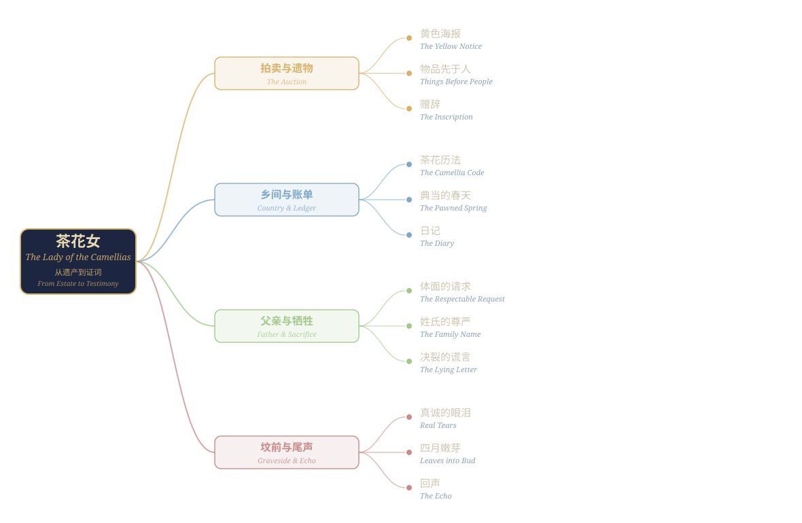

茶花女
〇 · 书籍信息
基本信息
| 书名 | 《茶花女》（La Dame aux Camélias）——她的标记：每月二十五天戴白茶花，五天戴红茶花，没人知道这密码的开合规律——一朵花是一部身体历法 |
|---|---|
| 作者 | 小仲马（1824–1895）：大仲马的私生子，七岁才被父亲认领——他一生写「不被社会承认的爱情」，第一个写的就是母亲式的玛格丽特；本书取材于他真实的恋人玛丽·杜普莱西（1847 年死于肺病） |
| 结构 | 27 章，三重框架：拍卖（我）→ 讲述（众人）→ 日记（她）——葬礼开场、爱情倒叙、坟前收束：全书按「死亡的时间」排列，爱被压进闪回里 |
| 体裁 | 框架叙事小说：叙述者自称「这个故事是真实的，只有我知道全部细节」——小说的第一项工程是把自己做成证词 |
| 一句话 | 她生前是巴黎被租借最多的女人，死后是巴黎被拍卖得最快的财产：三天清完一座公寓——而真正清不空的，是一册写给她没敢署名爱情的日记。 |
一 · 核心主题总览
一场葬礼的倒叙里埋着四组母题：① 物品先于人（全书引擎）
第一章只有拍卖目录：马车、开司米披肩、书、金框画——连女主人也是「遗产」。小仲马的判决藏在交易顺序里：在巴黎，交际花活着是消费，死了是清仓；物品的清单越精美，人格的账单越空白。
② 妓女与圣女
全书最锋利的一笔在结尾：纯洁的布朗什微笑着欢迎哥哥回家，「她不知道，在远方有一个姑娘牺牲掉了自己的幸福，为的只是维护她的姓氏的尊严」——圣洁与牺牲互换了姓氏：妓女做了修女的事，社会给修女记了功德。
③ 父权与牺牲
迪瓦尔先生不是恶人——「高大，威严，和蔼」，含泪拥抱儿子。他只要玛格丽特「为了另一个无辜者的未来」退场。小仲马的诚实：压迫未必长着恶人的脸，它可以是体面、慈爱与家族前途的总和。
④ 日记作为遗产
玛格丽特把真相写成日记：爱情被记成债务、典当与告别。这是全书最早被女性主义者引用的设计：她留给世界的唯一产业不是首饰，是陈述。
二 · 第一段 拍卖与遗物—— 黄色海报 · 安坦街 · 目录 ——
黄色海报与安坦街九号
1847 年 3 月 12 日，叙述者在拉菲特街看见一张巨幅海报：一场因主人去世而进行的拍卖——海报不写死者姓名。小仲马用「匿名」完成第一句判词：交际花的死亡不配拥有名字，只配拥有成交时间。参观日挤满了人：天鹅绒、开司米、自家四轮马车——上流女性成群结队来看一个「同行」的遗物，用惊异甚至羡慕的眼神打量豪华布置。
◆ 语言学习 · 开篇 · 拍卖
| notice /ˈnəʊtɪs/ | n. 告示，海报 —— 例句：a large yellow notice（拉菲特街）。拍卖公告词；与 advertisement 辨析：notice 带公事感 |
|---|---|
| estate /ɪˈsteɪt/ | n. 遗产，地产 —— 例句：an estate was to be disposed of（开篇）。拍卖语境核心词；estate sale「清仓拍卖」 |
| curio /ˈkjʊəriəʊ/ | n. 古董，珍玩 —— 例句：interested in curios（叙述者的自白）。复数 curios；收藏词族 |
| brougham /ˈbruːəm/ | n. 四轮马车 —— 例句：their own elegant broughams（上流女性）。名物词：十九世纪社交的「座驾」 |
句型 ｜ 「…men for the most part, but also a number of ladies who, though dressed in velvet and wearing Indian shawls… were examining the riches set out before them with astonished, even admiring eyes.」——though 插入让步、分词链铺陈、eyes 收尾：小仲马的观察句像运镜——先给人群的中景，再给眼神的特写。
清仓的速度与赠辞
几天后一切成交：一座交际花的公寓被拆成零售，连她用过的书都被估价。叙述者买下一册旧书——书页间出现一行赠辞：「阿尔芒赠玛格丽特」。全书的门就这样从拍卖场打开：爱情是唯一流拍的东西，它进了旁人的口袋，等待归还。
◆ 语言学习 · 遗物 · 赠辞
| auction /ˈɔːkʃn/ | n./v. 拍卖 —— 全章的动词：auctioneer 拍卖师；bid 出价；lot 拍品——拍卖四件套一次集齐 |
|---|---|
| inscribe /ɪnˈskraɪb/ | v. 题赠，题写 —— 例句：a book inscribed by Armand（赠辞）。inscription n.；旧书虫必备词 |
| dispose of | phr. 处置，清售 —— 例句：an estate to be disposed of。正文高频搭配：dispose=「摆到该去的位置」 |
| debt /det/ | n. 债务 —— 全书的经济暗线：爱情按账单计息。debt/debtor 词族；玛格丽特的自由是负债经营 |
习语 ｜ go under the hammer 上拍，成交锤下——拍卖的地道说法；realized price 成交价——小仲马的冷幽默：他让爱情第一次拥有了「成交价」这个词。
三 · 第二段 乡间与账单—— 白茶花 · 布吉瓦 · 日记 ——
茶花的历法
玛格丽特的标记是茶花：一个月二十五天白，五天红——没有人问过红色那几天意味着什么。小仲马把身体写进花的颜色：密码只对她自己成立，她的身体由她自己立法。在布吉瓦的乡间，她第一次过着「不像交际花的日子」：草地、旧书、不许她喝酒的叮咛——乡下的爱情不免费，它是她用典当首饰换来的。
◆ 语言学习 · 花标 · 乡居
| camellia /kəˈmiːliə/ | n. 茶花 —— 书名核心意象：白与红的双色历法；山茶属植物 |
|---|---|
| pawn /pɔːn/ | v. 典当 —— 玛格丽特的私房动词：pawn her jewels（为乡间生活筹资）；pawnshop 当铺 |
| retreat /rɪˈtriːt/ | n. 退离尘嚣之地 —— 例句：a country retreat（布吉瓦乡居）。retreat=「退守之处」——爱情的自建保护区 |
| consumption /kənˈsʌmpʃn/ | n. 肺痨（旧称）；消费 —— 一词双关的全书钥匙词：她死于 consumption（肺痨），也死于 consumption（消费） |
句型 ｜ 「She could not go on living as she had lived…」——can not go on + as 从句：小仲马的判词句式——先判生活方式，再判制度的冷漠：城市对她「什么都不欠」，其实是什么都不给。
日记与账本式爱情
病重、离群、被讨债人围困之后，她开始写日记——不是为了发表，是为了「让一个人知道真相」。日记里没有怨词，只有一笔笔记录：谁替她付了房租、哪件首饰进了当铺、哪次告别说了谎。小仲马发现：被侮辱者的文体天然是账本体——因为只有账目不会说谎，只有账目不敢说谎。
◆ 语言学习 · 日记 · 陈述
| diary /ˈdaɪəri/ | n. 日记 —— 全书的第二叙述层：从「我听说」切换到「她亲笔」；diarist 日记作者 |
|---|---|
| testimony /ˈtestɪməni/ | n. 证词 —— 日记的法律身份：叙述者称它让故事「完整而令人满意」；testify v. 作证 |
| settle /ˈsetl/ | v. 结清，偿还 —— settle the bills（日记的常客）；settlement 清偿——爱情的动词在这里全是会计动词 |
| sacrifice /ˈsækrɪfaɪs/ | n./v. 牺牲 —— 结尾判词用词：sacrificed her own happiness。宗教词挪用于爱情——妓女的牺牲无人设坛 |
习语 ｜ keep the books open 不结账——交际花的生存状态：永远欠着、永远被记；the ledger tells the truth——账本不说谎：全书把「财务」升格为「证词」的语法。
四 · 第三段 父亲与牺牲—— 迪瓦尔 · 姓氏 · 撤退 ——
迪瓦尔先生的请求
阿尔芒的父亲来了：不咆哮、不威胁，只摆事实——儿子正在变卖母亲的遗产，女儿布朗什的婚事正因这段关系告吹。他要玛格丽特退场，理由无懈可击：「一个清白姑娘的幸福，不该为一段无法公开的爱情陪葬」。于是全书出现小仲马最残忍的对位：玛格丽特问自己——凭什么我的牺牲就该便宜？随即自己答——「我爱他，所以他的姓氏比我的生命值钱」。
◆ 语言学习 · 父权 · 姓氏
| respectability /rɪˌspektəˈbɪləti/ | n. 体面，清白名声 —— 全书的真正对手：布朗什的婚姻=respectability 的市场价；respectable adj. |
|---|---|
| dignity /ˈdɪɡnəti/ | n. 尊严 —— 玛格丽特最后的持有物：以尊严换体面——两个词的差价就是全书的社会学 |
| invoke /ɪnˈvəʊk/ | v. 援引，祈求 —— 例句：at the mere invocation of her name（原文）。invoke a name=动用一个名字的权力 |
| renounce /rɪˈnaʊns/ | v. 放弃，退出 —— 例句：renounce her happiness（牺牲的同义词）。renunciation n.；宗教词族的世俗用法 |
句型 ｜ 「…not knowing, in the purity of her youth, that far away a courtesan had sacrificed her own happiness at the mere invocation of her name.」——not knowing 分词让无辜者保持无知，at the mere invocation 让牺牲轻若一声呼唤。长句的重音永远落在「mere」上：牺牲的全部重量，压在一个「仅仅」上。
谎言作为最后的温柔
为了让他恨自己，玛格丽特写了一封决裂信，声称要回到旧日生活。谎言是她最后的护理：她用一个假背叛，换他的真前程。阿尔芒果然以最恶毒的方式报复她——当众羞辱。她的应对没有一句体面话：病上加病。小仲马写透了误会的物理学：报复施加于误会，误会施加于爱，爱施加于死亡——四环相扣，无人松手。
◆ 语言学习 · 决裂 · 报复
| break off | phr. 断绝，解除 —— 例句：break off the engagement（婚约语境）。决裂的地道搭配 |
|---|---|
| insult /ɪnˈsʌlt/ | v./n. 侮辱 —— 例句：public insult（当众羞辱场景）。重音在首音节为名词、次音节为动词 |
| wrong /rɒŋ/ | n. 冤屈 —— 例句：the wrongs done to her（日记核心词）；a wrong=「一件被做错的事」——名词用法最古雅 |
| forgive /fəˈɡɪv/ | v. 宽恕 —— 全书最后被说出的动词之一：她的日记不控诉，只求「被记得」——宽恕是她给世界的余款 |
习语 ｜ die of a broken heart 心碎而死——本书的字面事实而非修辞；revenge backfires 报复反噬——阿尔芒的每一击都落在自己的爱上面，这是小仲马给所有恋人的物理学课。
五 · 第四段 坟前与尾声—— 迪普拉 · 四月阳光 · 判词 ——
朱莉·迪普拉的见证
死后只剩两个女人在场：朱莉·迪普拉守着她走完最后一程，「想起朋友，禁不住留下了真诚的眼泪」；迪韦努瓦太太则忙着编故事躲债。小仲马用两个女人给全书算总账：一个哭，一个算——眼泪是唯一无法入账的通货。坟前「四月里的阳光已经使上面的绿叶长出了嫩芽」——全书唯一的暖色，给了坟，没给城。
◆ 语言学习 · 见证 · 坟前
| witness /ˈwɪtnəs/ | n./v. 见证 —— 例句：the sad incident which she had witnessed。法律词的日常化：全书的「可信度」都靠它 |
|---|---|
| shed tears | phr. 落泪 —— 例句：shedding real tears（迪普拉）。shed=「掉落」：tears, blood, light 通吃——高级写法 |
| grave /ɡreɪv/ | n. 坟墓 —— 例句：Marguerite's grave；graveside 坟前——全书真正的客厅在坟前：所有人只在死后来访 |
| in bud | phr. 发芽 —— 例句：bringing the first leaves into bud（结尾的四月）。植物词做时间状语：季节在替小说续写 |
句型 ｜ 「…on which the first rays of the April sun were bringing the first leaves into bud.」——on which 定语从句 + first…first 对仗：坟墓获得春天，人间没有。环境句的任务不是描写，是判决：太阳照常升起，账目照样无人认领。
父爱高于一切
阿尔芒随叙述者回到 C 城：父亲含泪迎接，妹妹布朗什微笑如常——她永远不知道有一个姑娘为她的姓氏死过一次。叙述者写下全书的自我辩护：「这个故事只有一个可取之处：它是真实的」；随后是那句伟大的收束——「我并不是在宣传邪恶淫乱，但只要我听到这些高尚却不幸的人祈祷的声音，我就会为他们高声呼喊。」小仲马从小说家退成传声筒：他不审判，他把祷告转成社论。
◆ 语言学习 · 尾声 · 判词
| vouch for | phr. 担保，作证 —— 例句：they could vouch for their accuracy（开篇预告）。法律口吻：小说自我担保 |
|---|---|
| apostle /əˈpɒsl/ | n. 使徒，倡导者 —— 例句：I am not the apostle of vice（收束判词）。宗教词的自觉挪用：他拒绝布道，只肯做回声 |
| echo /ˈekəʊ/ | n. 回声 —— 例句：the echo of noble sorrow。全书最后一词之一：作家谦卑的顶点——只做回声，不做法官 |
| dignified /ˈdɪɡnɪfaɪd/ | adj. 威严的，高贵的 —— 例句：tall, dignified, kindly（父亲的三连定语）。体面词的陷阱：dignified 的父亲，正是要求别人牺牲的人 |
习语 ｜ the echo of noble sorrow 高尚痛苦的回声——小仲马的文学遗嘱：伟大的同情不是替人说话，是把已经说过的话再响一次。
六 · 人物图鉴与成长弧线—— 主角配角 · 一张表看穿 ——
主要人物
玛格丽特·戈蒂埃 Marguerite Gautier——原型玛丽·杜普莱西：巴黎最耀眼的交际花，茶花为记。弧线：拍卖目录上的死者 → 乡间恋人 → 撤退者 → 日记作者。她的反抗只有一种形式：陈述——她把一生从「被估价」改写成「被理解」。
阿尔芒·迪瓦尔 Armand Duval——法律青年，爱的信徒与报复的执行者。弧线：赠辞 → 乡间情人 → 被谎言欺骗者 → 报复者 → 坟前悔恨者。他的爱是真的，他迟到的理解也是真的——问题只在于：两样都到货太晚。
迪瓦尔先生 M. Duval——父亲：体面制度的人性面孔。弧线：求情者 → 成功的劝退者 → 含泪的迎接者。小仲马给他「高大、威严、和蔼」三个形容词：压迫最有效的形态，就是三个褒义词。
叙述者（我）——框架的持有人：从拍卖场的旁观者到全书的代言人。他的谦卑（只做回声）是小仲马的护身符：把「我写了一个妓女」合法化为「我记录了一段证词」。
次要人物（功能位）
| 朱莉·迪普拉 Julie Duprat | 守终的良家女：唯一陪她到最后一刻的人——上流社会缺席的地方，由另一位女性补位：小仲马的救赎名单上只有女人 |
|---|---|
| 布朗什 Blanche | 无辜的妹妹：她的清白婚姻是牺牲的支付对象——全书最锋利的讽刺：受益人根本不知情 |
| 普吕当丝 Prudence | 「聪明的」女伴：拿佣金的中人——交际花生态链的毛细血管：爱在中间层被抽成 |
| 迪韦努瓦太太 Mme Duvernoy | 躲债的编故事者——与迪普拉构成结尾的二重奏：一个哭，一个算 |
七 · 主题与象征—— 每个道具都在说话 ——
| 茶花 ↔ 身体历法 | 25 天白 + 5 天红：密码只对她本人成立——身体的主权声明 |
|---|---|
| 拍卖目录 ↔ 物品先于人 | 马车、披肩、书：人格的清单越精美，人的位置越空白 |
| 日记 ↔ 账本式证词 | 债务、典当、告别逐笔入账：被侮辱者的文体天然是会计文体 |
| 旧书赠辞 ↔ 命运的信物 | 「阿尔芒赠玛格丽特」：爱情在拍卖场唯一的残留物——流拍品的过户凭证 |
| 四月嫩芽 ↔ 迟到的季节 | 阳光给了坟头：全书的暖色只批给死者——活人那边维持原判 |
八 · 写作手法赏析—— 怎么写，就能怎么学 ——
① 葬礼开场
拍卖先于爱情：倒叙即审判——先把人做成遗产，再追问她如何活过。
② 三重框架
我 → 众人 → 她的日记：证词接力完成可信度工程——小说把自己办成了案卷。
③ 账本体抒情
用债务与典当写深情：财务词汇是十九世纪女性处境的母语。
④ 无辜者的无知
布朗什到全书结束都不知情：牺牲的重量，用受益人的沉默称量。
⑤ 回声式收束
apostle → echo 的让步：小说家最体面的退场——不审判，只转播祷告。
九 · 名段欣赏—— 原文精读 · 逐段赏析 ——
十 · 金句摘录—— 14 条 · 中英对照 · 带出处 ——
"It is my considered view that no one can invent fictional characters without first having made a lengthy study of people…"我认为，没有人可以在对人进行深入的研究之前就创造出虚构的人物。—— 第一章 · 开篇
"I am not the apostle of vice, but I would gladly be the echo of noble sorrow…"我并不是在宣传邪恶淫乱，但只要我听到这些高尚却不幸的人祈祷的声音，我就会为他们高声呼喊。—— 全书结尾
"我不够富，不能像我希望的那样爱你；你也不够穷，不能像你希望的那样爱我。"—— 玛格丽特的话（公认中译）
"获取一颗没有被人攻击经验的心，也就像夺取一座没有守卫的城池一样。"—— 公认中译
"茶花是她的标记：一个月二十五天白茶花，五天红茶花。"—— 全书密码
"她们用惊异甚至羡慕的眼神，打量着眼前的豪华布置。"—— 第一章 · 拍卖
"只有我知道这个故事的所有细节。"—— 开篇 · 叙述者
"他高大，威严，和蔼。"—— 结尾 · 父亲
"她微笑着欢迎哥哥回家，却不知道在远方有一个姑娘牺牲了自己的幸福。"—— 结尾 · 布朗什
"四月里的阳光已经使坟头的绿叶长出了嫩芽。"—— 坟前
"她把亲眼看到的凄凉故事讲了一遍，想起朋友，禁不住留下真诚的眼泪。"—— 朱莉·迪普拉
"这个故事只有一个可取之处——它是真实的。"—— 尾声
"我很快发现，在他心中，父爱高于一切。"—— 尾声 · C 城
"她生前是个罪人，但她死时是个基督徒。"—— 公认中译
十一 · 拓展阅读—— 原文 · 词条 · 译文 ——
原文与文本
- La Dame aux Camélias — Project Gutenberg（法文原版） —— 小仲马法文公版；与英文转译对照读
- The Lady of the Camellias — Wikipedia —— 真实原型玛丽·杜普莱西与改编史（话剧/歌剧《茶花女》）
作者与谱系
- Alexandre Dumas fils — Wikipedia —— 私生子的身世与「问题剧」创作观
- Verdi, La Traviata — Wikipedia —— 威尔第 1853 年歌剧改编：薇奥莱塔即玛格丽特
十二 · 个人感悟与心得—— 三点心得 ——
海报 · 茶花 · 回声
茶花女最了不起的设计是「葬礼开场」：全书从拍卖目录读起，人物最后才出场。小仲马赌的是读者的顺序感——当你先知道她值多少钱，再知道她值多少情，落差本身就是控诉。 这本小说的身份工程值得所有写作者研读：叙述者反复声明「故事是真的，有证人可查」——把虚构包装成证词，是十九世纪处理「不体面题材」的唯一合法手续；今天的非虚构写作仍在这套手续里工作。 从英文学习看，转译文本句式规整、从句清晰，是「典雅社交英语」的理想教材：拍卖四件套（auction/bid/lot/estate）、法律词族（testimony/vouch/witness）一次收齐——这本书的词汇表本身就是一份十九世纪巴黎的资产目录。—— 玛丽·杜普莱西死于 1847 年 2 月，年仅 23 岁；小仲马次年出版本书，扉页没有写她的名字。（她是「茶花女」，仅此而已。）
十三 · 一页速查（复习用）
| 全书骨架 | 拍卖（我）→ 讲述（众人）→ 日记（她）→ 坟前收束：倒叙框架 27 章 |
|---|---|
| 核心命题 | 物品先于人；牺牲的价值用受益人的无知称量 |
| 必背表达 | auction / estate / testimony / vouch for / the echo of noble sorrow / consumption（双关） |
| 三大符号 | 茶花（身体历法）· 拍卖目录（物品先于人）· 四月嫩芽（迟到的季节） |
| 一句话总结 | 她把一生从「被估价」改写成「被陈述」——回声是同情的最高形式 |
十四 · 全书思维导图—— 一图纵览 ——

一图纵览全书骨架 · 中英双语对照 · 手机端可左右滑动查看全图